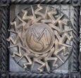
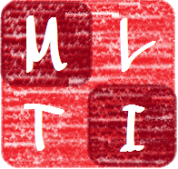
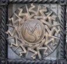
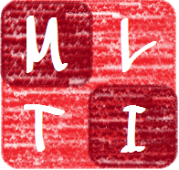

The PSSLs are a long-running series of meetings, usually held
over a weekend at a university in Europe. Talks cover all aspects of
category theory and its applications. The working atmosphere is
informal, e.g. talks are usually short and may be about work in
progress. The name is a (charming) historical relic - 'Peripatetic
Seminar on Sheaves and Logic' - but most talks are not about sheaves or
logic.
Plenary speakers
| Dominique Bourn |
L.M.P.A. Université du Littoral, F. |
| Maria Manuel Clementino |
Universidade de Coimbra, PT. |
| Matej Dostal |
Czech Technical University in Prague, CZ. |
| Marcelo Fiore |
University of Cambridge, UK. |
| Jonas Frey |
University of Cambridge, UK. |
| Marino Gran |
Université Catholique de Louvain, BE. |
| Martin Hyland |
University of Cambridge, UK. |
| Zurab Janelidze |
Stellenbosch University, ZA. |
| Joachim Kock |
Universitat Autònoma de Barcelona, ES. |
| Steve Lack |
Macquarie University, AU. |
| David McCarty |
Indiana University, USA. |
| Maria Emilia Maietti |
Università di Padova, IT. |
| Samuele Maschio |
Università di Padova, IT. |
| Paige North |
University of Cambridge, UK. |
| Federico Orsanigo |
Strathclyde University, UK. |
| Diana Rodelo |
Universidade do Algarve, PT. |
| Alex Simpson |
University of Edimburgh, UK. |
| Manuela Sobral |
Universidade de Coimbra, PT. |
| Thomas Streicher |
Technische Universität Darmstadt, DE. |
| Tim Van der Linden |
Université Catholique de Louvain, BE. |
Organizing committee
Nicola Gambino,
University of Leeds - Università di Palermo,
Marco Geraci,
Università di Palermo,
Sandra Mantovani,
Università di Milano,
Giuseppe Metere,
Università di Palermo.
Sponsors
Università degli Studi di Palermo - Dipartimento di Matematica e Informatica UNIPA
Dipartimento di Matematica - Università di Milano
P.R.I.N. Metodi logici per il trattamento dell'informazione"
I.N.D.A.M. - G.N.S.A.G.A. Gruppo Nazionale per le Strutture Algebriche, Geometriche e le loro
Applicazioni
A.I.L.A. - Associazione Italiana di Logica e sue Applicazioni
 


